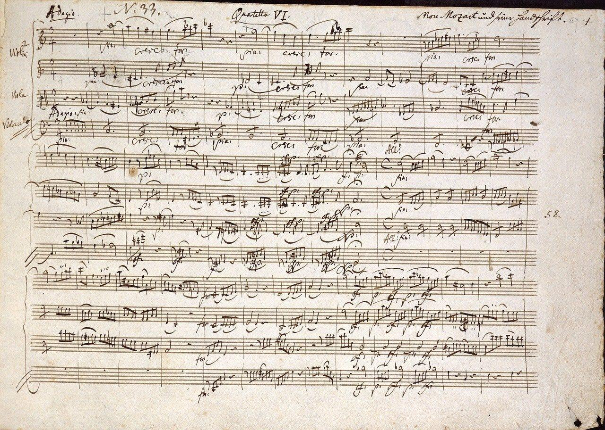

Wolfgang Amadeus Mozart was a prolific and influential composer of the Classical period. Despite his short life, his rapid pace of composition and extraordinary talent resulted in more than 800 works representing nearly every genre of Western classical music.

Original handwritten musical manuscript by Mozart.
"The music is not in the notes, but in the silence between."